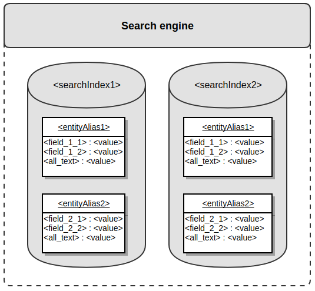
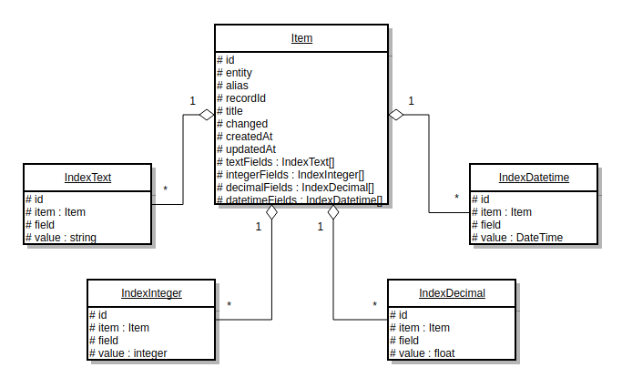
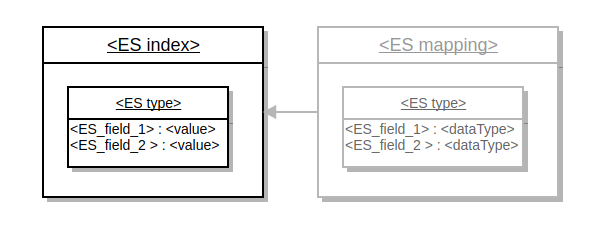
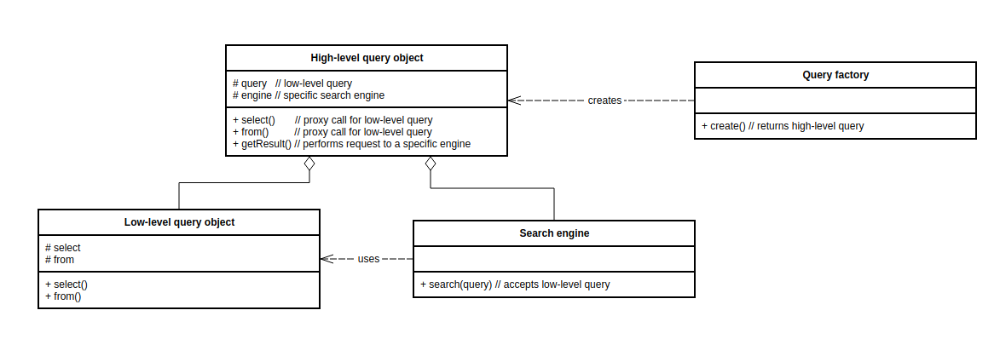

Search Index component is responsible for interaction with the separate search engine and search index storage inside it. Search engine can:
Search engine is the specialized software that provides ability to store data, index data and perform quick and relevant search. The biggest difference between the search engine and a conventional data storage is the fact that search engine performs search significantly faster, and can do overall full-text search in addition to search by the specific area. Examples of search engines - Elasticsearch, Lucene, Solr. To use an analogy to relational databases, search engine is similar to Database Management System (DBMS). Search index (sometimes referred as just index) is an actual storage where specific scope of search data is stored. One search engine may work with several indexes. Search index is structured, i.e. provides ability to organize data in the complex multilevel structures; minimal amount of levels required to work with Oro application is two. Search index can validate data type of the data stored inside. Search index is a document based storage where each document represents one specific entity from the main relational database. Search index can be considered as a specialized reflection of the main relational database. To use an analogy to relational databases, search index is similar to database (DB). Entity alias is a text representation of entity name stored inside the specific search index. Entity alias represents first level of search index structure. To use an analogy to relational databases, entity alias is similar to a table name. Entity field is a text representation of entity property name assigned to a specific entity alias. Entity alias represents second level of search index structure. Entity field has assigned data type (text, integer, decimal, datetime) and search engine uses this information to validate data stored inside the index. To use an analogy to relational databases, entity field is similar to a column name. Entity field value is an actual value of an entity property assigned to a specific entity field. To use an analogy to relational databases, entity field value is similar to a value of a column. All-text field is a special entity field used to do overall full-text search. Value of this field is usually calculated automatically based on the text entity field values. Search document is a combination of entity fields and entity field values and represents data of one specific entity from the main relational database. Search document has plain structure - i.e. field values must not contain other documents. To use an analogy to relational databases, search document is similar to a table row. Indexation is a process of updating of a data in a search index - it might be extraction of the required data from an entities and saving it to search index, or removing of required documents from search index. Search mapping is a combination of entity aliases and entity field definitions. To use an analogy to relational databases, search mapping is similar to a database schema. Search placeholder is a variable part of entity alias or entity field which can be substituted with an actual value during the indexation or performing a search request.
Following diagram shows described structure:
Oro applications use two typed of indexes which are using common interfaces.
Common interfaces are used at all index types to provide high level abstraction for a functionality that has to work with any type of search index (e.g. datagrids). Search engine interface OroBundleSearchBundleEngineEngineInterface is used to perform search requests to a search index. Search indexer interface OroBundleSearchBundleEngineIndexerInterface is used for indexation, i.e. to change state of a search index (save data, remove data, reset index).
Standard index type (sometimes referred as default index type or backend index type) is used at all applications based on OroPlatform. Each entity is represented by one plain entity alias, contains plain field names to represent data assigned directly to main entity or data from the related entities.
Standard index type triggers following events:
Standard index type performs indexation on an entity level - i.e. indexation process is triggered for each entity. Search field values can be calculated automatically based on the defined search mapping. Each search document contains one all-text field value calculated automatically as a concatenation of all text entity field values. Each field might have several values - in this case it will be represented as an array, and comparison operations will iterate over all of them. During the reindexation entities that are being reindexing are not available for search.
Search mapping can be stored inside any bundle at the file Resources/config/oro/search.yml. Engine-specific services have to be defined at file Resources/config/oro/search_engine/<engine>.yml. Main logic of this index type is stored inside the OroSearchBundle at platform package.
Website index type (sometimes referred as frontend index type) is used only at the OroCommerce application - this application uses standard index type at backend part, and website index type at frontent part of the application. Each entity is represented by one alias wtih optional search placeholder (e.g. oro_product_WEBSITE_IT), so in fact each website might have it’s own entity alias (e.g. oro_product_1 and oro_product_2). Entity fields might contain search placeholders as well (e.g. name_LOCALIZATION_ID), so in fact each field might have several values depending on the provided placeholders (e.g. name_1, name_2 and name_3).
Website index type triggers following events:
Website index type performs reindexation on an entity batch level - i.e. indexation process is triggered for batch of entities (default batch size is 100). Search field values have to be calculated and set manually at a listener to oro_website_search.event.index_entity event. Each search document contains all-text fields for each available localization (all_text_LOCALIZATION_ID) and one all-text field that includes values from all localizations, values are calculated automatically based on a flag set during the indexation (i.e. developer may specify what exact values should be in all-text field value). Each field without placeholder must have ony one value. During the reindexation entities that are being reindexing are available with the old (outdated) data.
Placeholders are defined in code in a classes that implements OroBundleWebsiteSearchBundlePlaceholderPlaceholderInterface. Here are the most commonly used placeholders (pay attention that there are more of them in a code):
Search mapping can be stored inside any bundle at the file Resources/config/oro/website_search.yml. Engine-specific services have to be defined at file Resources/config/oro/website_search_engine/<engine>.yml. Main logic of this index type is stored inside the OroWebsiteSearchBundle at commerce package.
ORM search engine doesn’t use actual document-based storage - instead it emulates such storage inside application relational database using EAV model. As a consequence, performance of ORM engine is not very good and because of that it is recommended only for small applications - with a couple thousands of entities. ORM search engine uses separate Entity Manager and connection called “search” - this way search requests can be processes independently from default DB connection. ORM search engine for standard index type is implemented at the OroSearchBundle at platform package, for website index type - at the OroWebsiteSearchBundle at commerce package.
See detailed information about the implementation of ORM search engine in the Manage Search in Oro Applications (ORM) topic.
Elasticsearch search engine allows to store big amount of data and perform fast search queries. Performance of Elasticsearch engine is quite good and it’s recommended for bigger applications - with hundereds of thousands and millions of entities. Elasitcsearch search engine requires credentials to connect to actual index. Credentials include optional WWW-auth parameters and SSH connection support. Elasticsearch search engine for standard index type is implemented at the OroElasticSearchBundle at platform-enterprise package, for website index type - at the OroWebsiteElasticSearchBundle at commerce-enterprise package. Current implementation supports only Elasticsearch 2.* versions.
See detailed information about the implementation of ElasticSearch engine in Oro here.
Search index stores documents grouped by entity alias. Each document contain scalar fields with values, one of the fields is all-text field used to perform overall search. Data from the related entities might be stored as well, but in this case it has to be denormalized to a plain structure. There are four supported entity field value data types:
ORM search engine stores data using EAV model to store attributes. There is one main entity and four related entities used to store data for each of the supported field data types. One main entity contains main information about the document - entity class, entity ID, entity alias, default title, flag that indicates whether entity was changes and createdAt/updatedAt fields. All four related entities have similar structure - they store name of the entity field and actual entity field value. Here is diagram that shows this structure:
Each of the supported index types uses it’s own set of entities - i.e. 5 entities for standard index type and 5 more entities for website index type.
Elasticsearch search engine is document based from the very beginning, so index data structure is pretty straight forward. Search index is represented by the Elasticsearch index.
Search aliases are represented by the Elasticsearch types. Search field values are stored inside the Elasticsearch document. Search mapping is defined at the Elasticsearch mapping, it is generated automatically during the index creation. Here is diagram that shows this structure:
Each of the supported index types uses it’s own Elasticsearch index.
Here is example of the document from the standard index type under oro_user entity alias.
{
"username":"admin",
"all_text":"admin admin@example.com example com John Doe",
"email":"admin@example.com",
"firstName":"John",
"lastName":"Doe",
"assigned_organization_id":[
1
],
"organization":1,
"oro_user_owner":1
}
Pay attention to the following facts:
Here is example of the document from the website index type under oro_product_WEBSITE_ID (WEBSITE_ID = 1) entity alias.
{
"assigned_to_variant_31":1,
"assigned_to_variant_25":1,
"assigned_to_variant_19":1,
"assigned_to_variant_11":1,
"newArrival":1,
"inventory_status_priority":2,
"product_id":2,
"category_id":8,
"visibility_anonymous":1,
"visibility_new":1,
"is_visible_by_default":1,
"all_text_1":"Retail Supplies Credit Card Pin Pad Reader Choosing the right credit card processing terminal to fit your business needs can help you increase your profits and reduce your processing costs. This credit card reader helps you do just that. Its' easy-to-use ATM style interface accepts PIN-based debit card transactions and swipes traditional payment cards. It also accepts chip cards and features a built-in receipt printer Product Information & Features: Catalog Page: 2976 Performs PIN based debit card transactions Accepts chip cards Prints transaction receipts Connectivity: USB (not included) Large, backlit display Supports all magnetic stripe cards Color: Purple Technical Specs: Width: 6\u201d Height: 3\u201d Weight: .6 lb. ACME defaultMetaDescription defaultMetaKeywords 1AB92",
"sku":"1AB92",
"all_text":"1AB92 Retail Supplies Credit Card Pin Pad Reader Choosing the right credit card processing terminal to fit your business needs can help you increase your profits and reduce your processing costs. This credit card reader helps you do just that. Its' easy-to-use ATM style interface accepts PIN-based debit card transactions and swipes traditional payment cards. It also accepts chip cards and features a built-in receipt printer Product Information & Features: Catalog Page: 2976 Performs PIN based debit card transactions Accepts chip cards Prints transaction receipts Connectivity: USB (not included) Large, backlit display Supports all magnetic stripe cards Color: Purple Technical Specs: Width: 6\u201d Height: 3\u201d Weight: .6 lb. ACME defaultMetaDescription defaultMetaKeywords",
"names_1":"Credit Card Pin Pad Reader",
"shortDescriptions_1":"Choosing the right credit card processing terminal to fit your business needs can help you increase your profits and reduce your processing costs. This credit card reader helps you do just that. Its' easy-to-use ATM style interface accepts PIN-based debit card transactions and swipes traditional payment cards. It also accepts chip cards and features a built-in receipt printer",
"inventory_status":"out_of_stock",
"sku_uppercase":"1AB92",
"status":"enabled",
"type":"simple",
"image_product_large":"\/media\/cache\/attachment\/resize\/11\/product_large\/59d20f5ae821f060277950.jpeg",
"image_product_medium":"\/media\/cache\/attachment\/resize\/11\/product_medium\/59d20f5ae821f060277950.jpeg",
"product_units":"a:2:{s:4:\"item\";i:0;s:3:\"set\";i:0;}",
"category_path":"1_8",
"category_title_1":"Retail Supplies",
"minimal_price_3_EUR_item":"60.8000",
"minimal_price_7_EUR_item":"60.8000",
"minimal_price_2_USD_item":"60.8000",
"minimal_price_6_USD_item":"60.8000",
"minimal_price_4_EUR_item":"60.8000",
"minimal_price_1_EUR_item":"76.0000",
"minimal_price_5_EUR_item":"60.8000",
"minimal_price_5_USD_item":"60.8000",
"minimal_price_1_USD_item":"76.0000",
"minimal_price_4_USD_item":"60.8000",
"minimal_price_6_EUR_item":"60.8000",
"minimal_price_2_EUR_item":"60.8000",
"minimal_price_7_USD_item":"60.8000",
"minimal_price_3_USD_item":"60.8000",
"minimal_price_7_EUR":"60.8000",
"minimal_price_3_EUR":"60.8000",
"minimal_price_1_EUR":"76.0000",
"minimal_price_6_USD":"60.8000",
"minimal_price_4_EUR":"60.8000",
"minimal_price_4_USD":"60.8000",
"minimal_price_6_EUR":"60.8000",
"minimal_price_1_USD":"76.0000",
"minimal_price_3_USD":"60.8000",
"minimal_price_7_USD":"60.8000",
"minimal_price_5_EUR":"60.8000",
"minimal_price_2_USD":"60.8000",
"minimal_price_2_EUR":"60.8000",
"minimal_price_5_USD":"60.8000",
"tmp_alias":"oro_product_1_website_search59d7a947de6e69.38892637"
}
Pay attention to the following facts:
To perform search request developer has to build a query to search index. There are two representations of search query - string represenation and object represenation.
String representation is pretty similar to standard SQL query - this string may contain keywords select, from, where, aggregate, order_by, offset and max_results. String represenation is used mostly at the API where user can request specific data with specific condition. During the processing of string representation it’s converted to object representation.
Object representation has two levels - low and high. Low-level object (OroBundleSearchBundleQueryQuery, sometime called search query builder) represents a query and has parts similar to string represenation (select, where etc). Low-level query is not aware about specific search engine. It’s used by all search engines as a main query representation. Low-level object is in fact a Data transfer object. High-level object (implementation of OroBundleSearchBundleQuerySearchQueryInterface) is used to hide search engine specific logic from a developer. It embeds low-level object and proxies most of the calls. High-level objects are created by the query factory (implementation of OroBundleSearchBundleQueryFactoryQueryFactoryInterface). Each index type has it’s own implementation of high-level object which encapsulates the way this query has to be executed, and it’s own implementation of query factory responsible for creation of high-level object. High-level object is in fact a Facade. Following diagram demonstrates connection between low-level object, high-level object, query factory and search engine:
The recommended way to trigger search request is to get instance of high-level object, build a query, execute it and get results. It’s also recommended to isolate all search requests in a search repository (see Best Practices section) to separate storage logic from business logic. However, if you really need to work on a lower level (e.g. to write functional test) then you can get instance of an appropriate search engine type. All following engines implement standard search engine interface OroBundleSearchBundleEngineEngineInterface:
All these engines accept low-level query and execution context as an arguments, and return result object with list of found entities, total number of results and requested aggregated data.
Most of the indexation operations are performed asynchronously using a message queue. Advantage of this approach is that user should not wait while indexation is finished to see response from the application, also asynchronous indexations might be perfromed in parallel to speed up overall indexation process. Disadvantage is that indexation may happen with a delay - delay time depends on number of consumers, server hardware and queue length. Every time some entity which should be represented by a document in a search index is changed new message that contains entity class and entity identifier is generated and sent to message queue. Then message queue consumer receives this message and runs appropriate message processor that performs real indexation and does real change in search index. Please, remember, that parallel indexation is possible only if there are several message queue consumers running - each consumer is able to run indexation, so the bigger amount of consumers running the more indexations can be performed in parallel. All automatically triggered reindexations are processed asynchronously.
Despite the fact, that asynchronous processing is very convenient for a user, sometimes it might be required to track process manually and make sure that indexation is finished right away. In this case synchronous indexation should be used instead of the asynchronous one. Advantage of this approach that indexation will happen right now without any delay. Disadvantage is that it might be slower and UX is worse than in case of asynchronous indexations.
Both standard and website index types automatically trigger reindexation process when entity data or related configuration is changed.
Standard search index type provides CLI command oro:search:reindex that can be used to manually tirgger full reindexation of all entities, or only entities of a specific class. It has flag called scheduled to run indexation asynchronously. Here are examples of a work with this command.
Website search index type provides similar CLI command called oro:website-search:reindex which used to manually tirgger full reindexation of all entities, only entities of a specific class or entitie for a specific website. It also has flag called scheduled to run indexation asynchronously. Here are examples of a work with oro:website-search:reindex command.
Website search index type provides an event called oro_website_search.reindexation_request to manually trigger reindexation process for the specified scope of entities. It uses event class OroBundleWebsiteSearchBundleEventReindexationRequestEvent which accepts boolean parameter $scheduled to specify whether indexation has to be asynchronous (default behaviour) or synchronous. Here are examples of a triggering of this event.
Both standard and website search index types have synchronous and asynchronous indexers which trigget corresponding type of indexation. All following indexers implement the same standard indexer interface OroBundleSearchBundleEngineIndexerInterface:
All these indexers accept entities of entity class that has to be reindexed.
Standard index type automatically adds owner and organization fields to all entities and fills them with data during the indexation process. Then during the search request ACL restrictions are automatically applied to a low-level query to show only entities which current user is allowed to see.
Website index type doesn’t have common ACL protection like standard index type. Instead each entity can be protected by the custom specific conditions. For example, visibility of a Product entity to a cutomer user is affected by a product status, product inventory status and product visibility settings on a customer, customer group and website levels.
ORM search engine uses DBMS as a main storage and its scalability depends on scalability of DBMS. For example, PostgreSQL supports several clustering solutions, so ORM search index can be scaled together with the main relational DB. There is one more trick that can be used. As long as ORM search engine uses it’s own connection and it’s own entity manager, all search related tables can be moved to a separate DB at the remote server. In this case application administrator has to override configuration for connection called search and refer to this remote server.
Elasticsearch search engine is horizontally scalable out of the box - it can be organized as an Elasticsearch cluster with a several nodes inside it. Application administrator can specify how many Elasticsearch shards index will consist of (i.e. how many parts it will be split into), default number of shards is 5. Then depending on the number of nodes at cluster, search engine can move shards to different nodes and, as a consequence, allow to perform distributed search.
Loggin is an essential part of any conponent, and search component is not an exception. Both standard and website search indexes in dev mode log all requests to search index storages (DB or Elasticsearch); in prod mode only exceptions are logged. In case of prod mode all exceptions are also sent to an emails specified in system configurations at System Configuration > General setup > Application settings > Error logs notification section. Standard search index also may log all search queries to database table oro_search_query (entity name is OroBundleSearchBundleEntityQuery), by default this logging is turned off. Elasticsearch engine impelementations uses their own Monolog logger channels - oro_elastic_search for standard index type and oro_website_elastic_search for website index type.
There is a special datagrid search datasource that works with search index. Search datasource works with high-level search query object, so both index types are supported. Datagrids based on this datasource use configuration similar to ORM configuration - developer can specify shown columns, filters, sorters, properties and actions.
Implemented search datagrids:
Autocomplete form types by default use standard search index type to find entities and show them to user (see OroBundleFormBundleAutocompleteSearchHandler). They don’t use niether string, nor object query representation directly - instead it uses the indexer from the standard search index, which uses low-level query object inside.
Standard search index provides API resources that can be used to work with this search index.
Simple search API accepts:
Advanced search API accepts string representation of search request.
In both cases API returns list of found entities.
Search index is a document based storage and it does not support relations. Instead you can denormalize them and store related information at the main entity level - this way you can increase search speed. For example, if Product entity has a relation to Brand entity then Product document at the search index may store some brand information (ID, label etc) which might be required to do effective and fast search.
Every time you want to request some custom information from the search index you should get it via the search repository. Search repository provides a storage abstraction layer (similar to Doctrine entity repositories), so business logic will be aware about the repository, but not about the search index structure. If you want to create a repository then you should create new class extended from the appropriate search repository class (OroBundleSearchBundleQuerySearchRepository for standard index type or OroBundleWebsiteSearchBundleQueryWebsiteSearchRepository for website index type), declare it as a service, add custom methods and inject it into required business logic service. Search repositories work with the high-level search query object representations. You can optinally pass entity name as well - in this case queries will be by default executed only for the specific entity. Here is example of search repository for standard index type and its definition:
<?php
namespace Oro\Bundle\UserBundle\Search;
use Oro\Bundle\SearchBundle\Query\Criteria\Criteria;
use Oro\Bundle\SearchBundle\Query\Query;
use Oro\Bundle\SearchBundle\Query\SearchRepository;
/**
* Search repository used to extract user data from standard search index
*/
class UserRepository extends SearchRepository
{
/**
* @param string $domain
* @return array
*/
public function getUserIdsByEmailDomain($domain)
{
$elements = $this->createQuery()
->addWhere(Criteria::expr()->like('email', $domain))
->setMaxResults(Query::INFINITY)
->getResult()
->getElements();
$userIds = [];
foreach ($elements as $element) {
$userIds[] = $element->getRecordId();
}
return $userIds;
}
}
services:
oro_user.search.repository.user:
class: 'Oro\Bundle\UserBundle\Search\UserRepository'
arguments:
- '@oro_search.query_factory'
- '@oro_search.provider.search_mapping'
calls:
- [setEntityName, ['Oro\Bundle\UserBundle\Entity\User']]
And here is example of search repository for website index type and its definition:
<?php
namespace Oro\Bundle\ProductBundle\Search;
use Oro\Bundle\SearchBundle\Query\Criteria\Criteria;
use Oro\Bundle\SearchBundle\Query\SearchQueryInterface;
use Oro\Bundle\WebsiteSearchBundle\Query\WebsiteSearchRepository;
class ProductRepository extends WebsiteSearchRepository
{
/**
* @param array $skus
* @return SearchQueryInterface
*/
public function getFilterSkuQuery($skus)
{
$searchQuery = $this->createQuery();
// Convert to uppercase for insensitive search
$upperCaseSkus = array_map("strtoupper", $skus);
$searchQuery
->addSelect('sku')
->addSelect('names_LOCALIZATION_ID as name')
->addWhere(Criteria::expr()->in('sku_uppercase', $upperCaseSkus));
return $searchQuery;
}
}
oro_product.website_search.repository.product:
parent: oro_website_search.repository.abstract
class: 'Oro\Bundle\ProductBundle\Search\ProductRepository'
calls:
- [setEntityName, ['Oro\Bundle\ProductBundle\Entity\Product']]
Please, don’t use search engine and search indexer at the production code directly. If you need to perform search request it’s better to encapsulate it inside search repository. If you need to trigger reindexation then you should remember, that most of the data is reindexed automatically; if you need to do manual reindexation you can usually do it on a higher level - e.g. you can trigger an event at website index type. If for some reason you still have to work directly with search engine or search indexer - please, encapsulate all your logic inside the intermediate storage layer service (similar to search repository) and use it at the business logic layer. This way business logic will be aware about a storage, but not about the structure of the search index itself.
If you need to debug some search requests/indexations, but don’t know an entry point to it, then you can set a breakpoint in the appropriate engine/indexer (or all engines/indexers) - this way after you catch the breakpoint you’ll be able to track whole stack trace. The most commonly used method for a search engine is search; the most commonly used methods for a search indexers are save and delete. Please, remember, that most of the indexations are happended asynchronously - so, if you want to debug real indexation you should set breakpoint at the appropriate indexer, run message queue consumer in debug mode to be able to catch breakpoint and then trigger asynchronous indexation. If you need to debug remote server and you don’t have an access to it then you should configure logging there and see results in logs.
Search index interaction like any storage interaction have to be covered with functional tests. In functional tests you can work directly with the search repository, search engine or search indexer. You can and you should also cover search index interaction with behat tests as well.
Elastic HQ is a very useful plugin for developers because it provides UI to manage Elasticsearch cluster (indexes, mappings, queries etc) instead of the plain CLI. This plugin is recommended to use only at the development environment because of the possible security issues at production environment.
There are several ways how you can optimize search index and speed up search and indexation speed.
Here are couple of recommendations how to work properly with search index with a big amount of data - 1 million of entities and more.
Entity that was changed might be not indexed yet and reindexation request message is still waiting in message queue. Please, make sure that consumer is running, all messages are processed and then try again.
First possible reason: New entity might be not indexed yet and reindexation request message is still waiting in message queue. Please, make sure that consumer is running, all messages are processed and then try again. Second possible reason: Current user is not allowed to see new entity. Standard search index type: Current user doesn’t have permissions to see the entity. Please, have a look at ownership and organization of the entity and check if current user have an access to it. Website search index type: The entity is invisible to a current user. Please, check parameters that might affect visibility of the entity to a current user (statuses, visibility restrictions, system configuration etc).
Please, verify credentials specified at the app/confing/parameters.yml file - host, port, index name, authentication options. You can try to manually connect to Elasticsearch server via CLI curl command to make sure that you have an access to it:
$ curl -I http://localhost:9200
HTTP/1.1 200 OK
Content-Type: text/plain; charset=UTF-8
Content-Length: 0
$ curl -I http://localhost:9200/index_name
HTTP/1.1 200 OK
Content-Type: text/plain; charset=UTF-8
Content-Length: 0
Implementation of full-text search depends on a storage type, so different engines might return slightly different results and this is valid behaviour. Oro applications may use three different full-text search algorithms - Mysql DBMS full-text search, PostgreSQL DBMS full-text search or Elasticsearch full-text search.
If your index is totally broken and you need to create it from scratch, or you need to refresh only specific scope of entities then you should use reindexation command.
Standard search index provides following CLI commands (here are examples of a work with these commands):
Website search index provides following command (hear are examples of a work with this command):